34production viewport checks
320–1,920CSS pixels across tested widths
0detected overflow or header collisions
999 px: smooth hero reflow

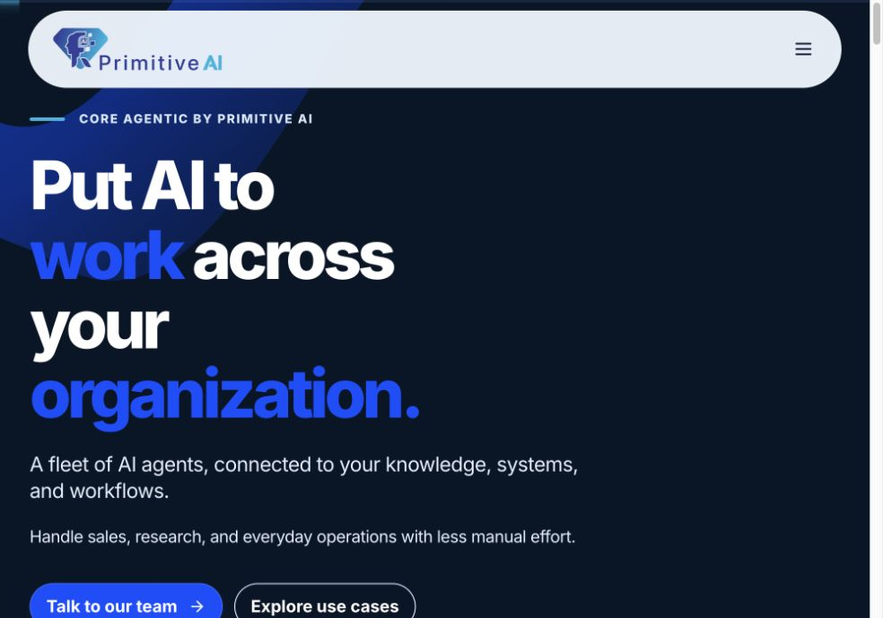

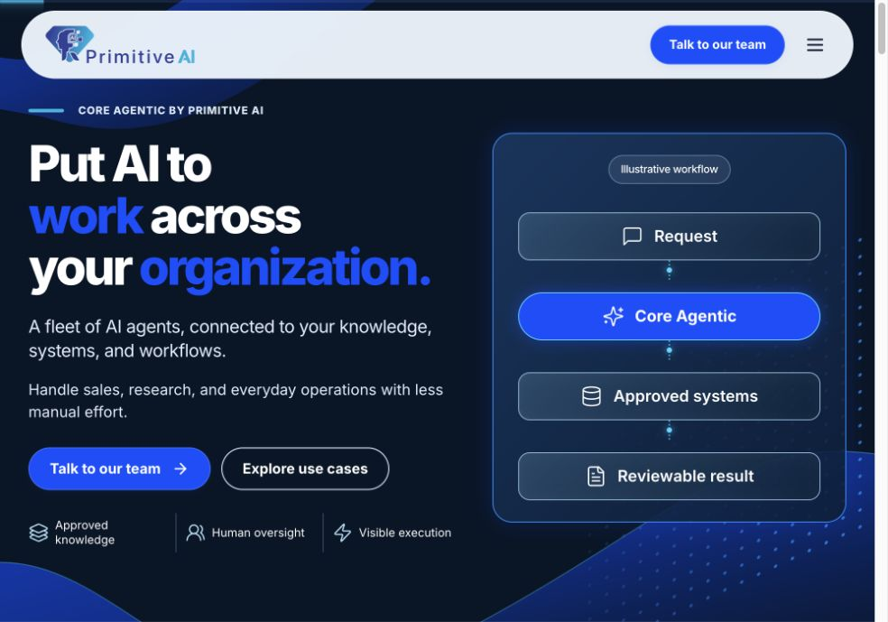
768 px: balanced delivery cards

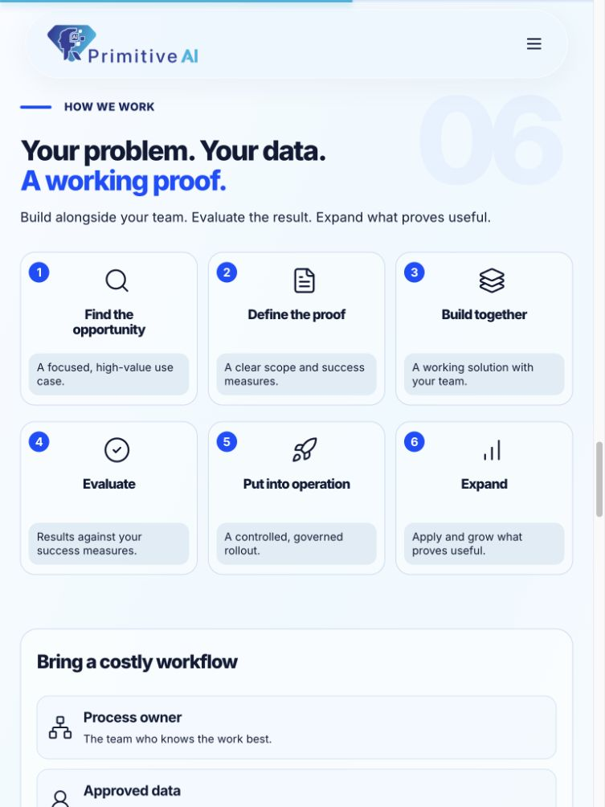

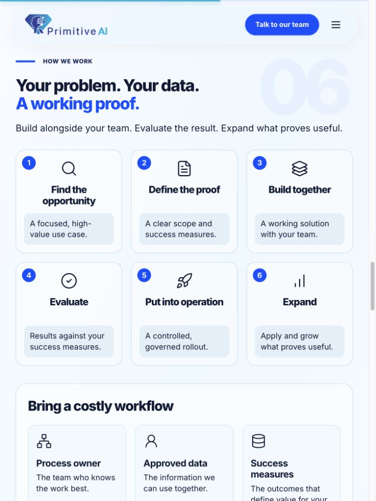
Phone layouts
Readable type, compact cards, reachable controls and diagrams that reflow. Click a capture to view it at its native size.


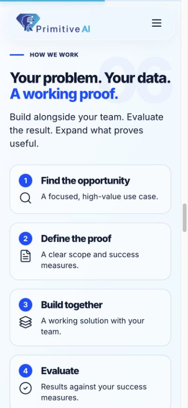

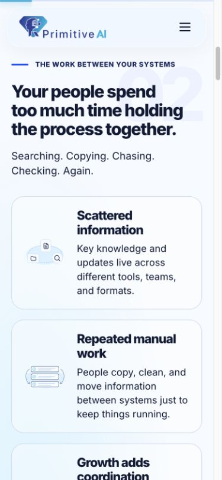

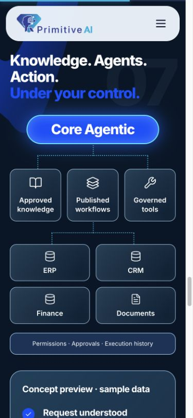

Landscape, tablet and desktop


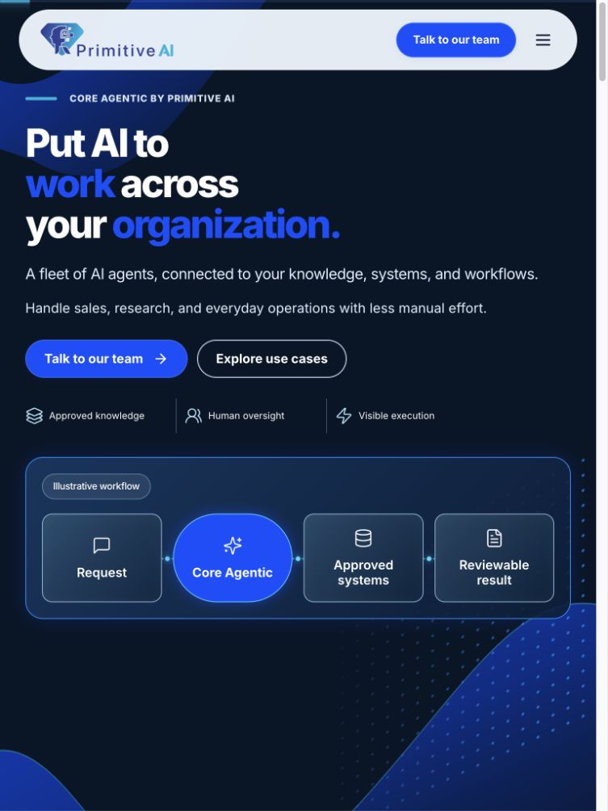

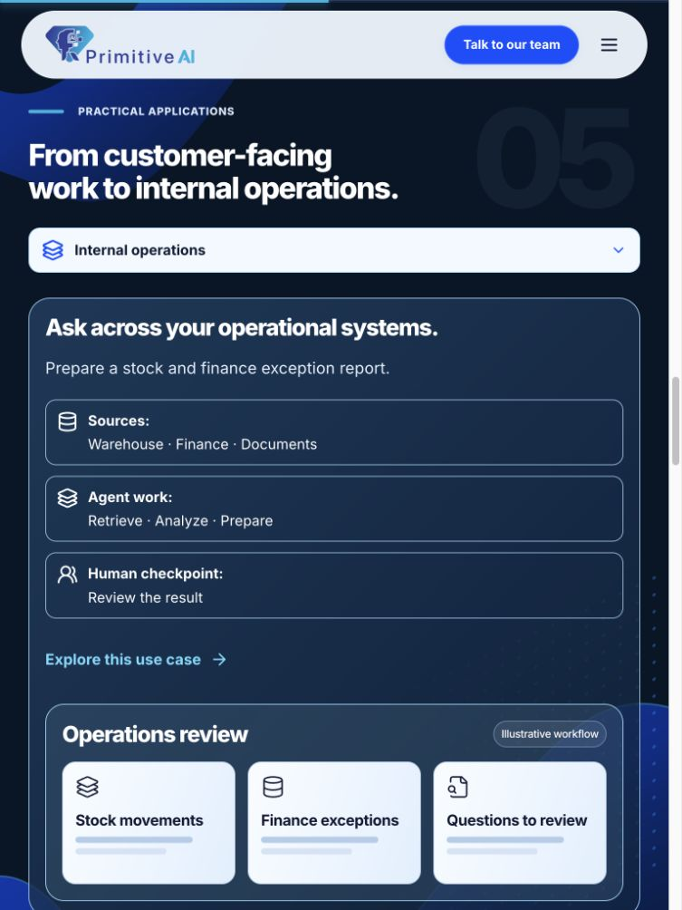

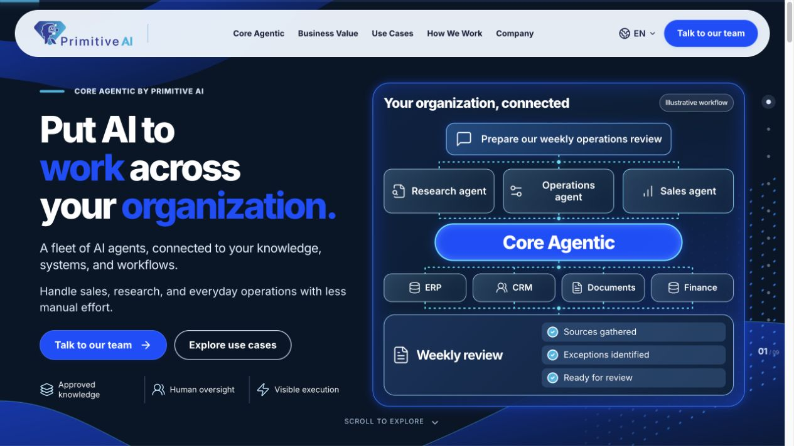

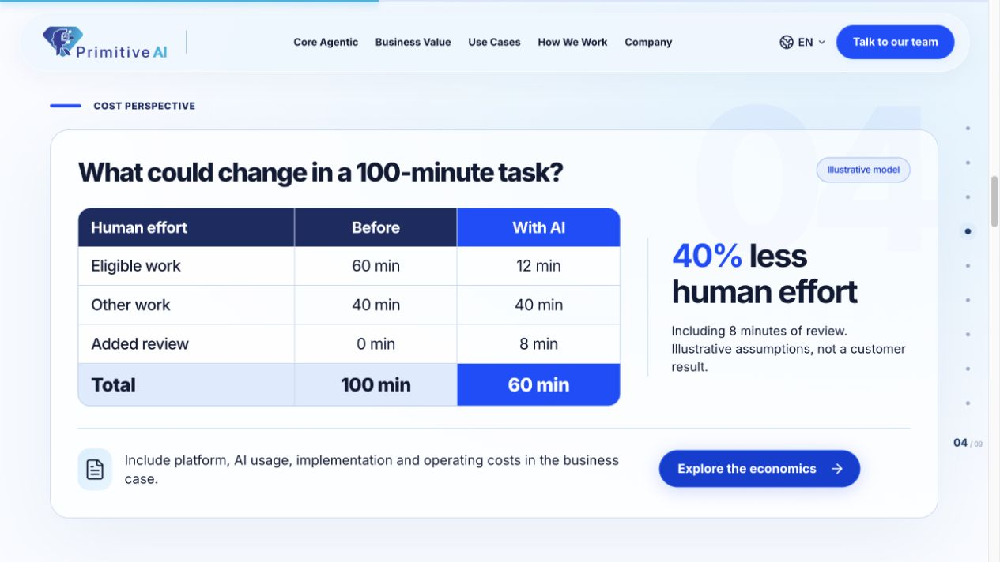

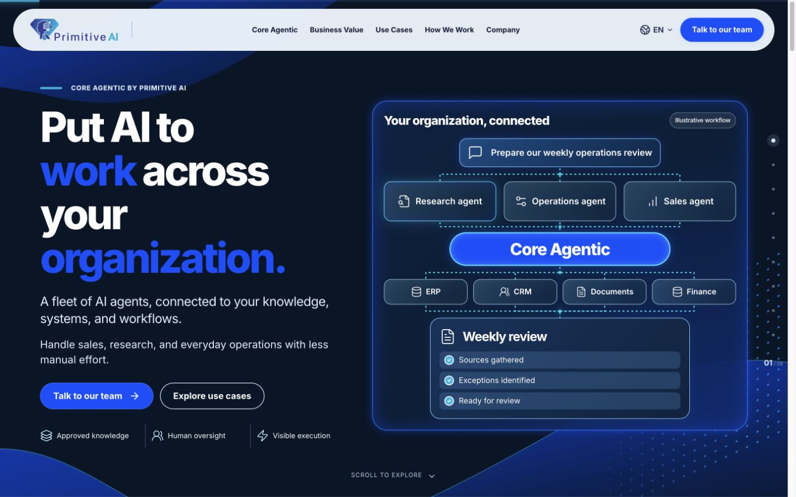
Complete scroll-throughs
Captured after scrolling through the page normally, so all entrance-animation targets had been revealed. Open each image to inspect the complete journey.


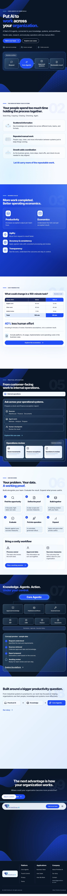

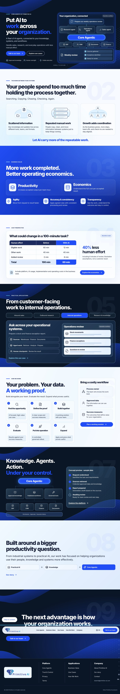